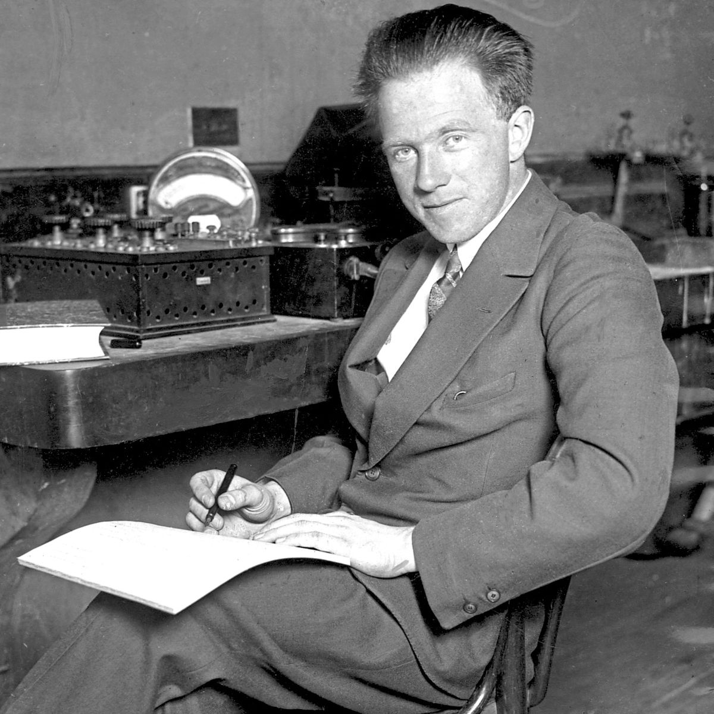

The Uncertainty Principle
Presented by Mahin Mujtaba, Rabia Rafaq, Iman Shuja

Werner Heisenberg
Werner Heisenberg (1901-1976) was a German physicist renowned for creating matrix mechanics, the first complete formulation of quantum mechanics, and for discovering the famous uncertainty principle. Born into an academic family in Wurzburg, he excelled in mathematics and developed a lifelong fascination with Plato's philosophy, believing that mathematical forms underpin physical reality. After studying under Arnold Sommerfeld in Munich, he worked with Max Born and Niels Bohr, whose mentorship proved decisive. In 1925, while recovering from hay fever on the island of Helgoland, Heisenberg achieved his breakthrough, formulating quantum mechanics in a leap of solitary insight. Two years later, at just 25, he introduced the uncertainty principle, showing that certain pairs of properties-like position and momentum-cannot both be measured with arbitrary precision. This principle became a cornerstone of modern physics and earned him the 1932 Nobel Prize in Physics at age 31. Beyond his scientific genius, Heisenberg's early exposure to Greek philosophy and youth movements shaped his idealistic conviction that deep truths transcend direct observation.
Discovering Uncertainty
In 1927, building on his earlier matrix mechanics, Werner Heisenberg made a profound conceptual
leap that became the uncertainty principle. While analyzing the mathematical formalism of quantum
theory, he realized that nature imposes fundamental limits on measurement precision. Specifically,
the more accurately you determine a particle's position, the less accurately you can know its
momentum-and vice versa.
Heisenberg illustrated this with a famous thought experiment: using a high-energy gamma-ray
microscope to locate an electron. The very act of measurement inevitably disturbs the system.
Shorter wavelengths give better position resolution but transfer greater, unpredictable momentum
kicks to the electron.
Crucially, the uncertainty principle reflects the wave-particle duality of matter. A particle simply
does not possess simultaneously well-defined position and momentum. The product of their
uncertainties always remains greater than or equal to Planck's constant divided by 4π. This
principle shattered classical determinism, showing that limits to knowledge are woven into the
fabric of nature.
Microscope Simulator
Cyan Fuzziness = Approximate Location of Particle
Orange Cone = Possible Knockback Directions (Momentum)
UV/VIOLET 500
VISIBLE 700
RED/IR
NARROW 45*<
MEDIUM 80*<
WIDE
Position-Momentum Uncertainty
The position-momentum uncertainty principle, formulated by Werner Heisenberg in 1927, states that it
is impossible to simultaneously know both a particle's exact position and its exact momentum.
Mathematically: Δx · Δp ≥ ℏ/2, where Δx is the uncertainty in position, Δp is the uncertainty in
momentum, and ℏ is the reduced Planck constant.
This is not a measurement flaw but a fundamental property of quantum systems. A particle does not
possess a definite position and momentum at the same time. The more precisely one is known, the more
uncertain the other becomes. Confining an electron to a tiny space (small Δx) forces its momentum to
become highly uncertain-it can have a wide range of possible velocities.
This principle demolishes classical determinism. Instead, nature imposes an irreducible fuzziness at
quantum scales. The uncertainty principle became a cornerstone of quantum mechanics, revealing that
limits to knowledge are built into reality itself.
Energy-Time Uncertainty
The energy-time uncertainty principle differs from position-momentum because time is not an operator
in standard quantum mechanics. Instead, Mandelstam and Tamm derived the relation ΔE · Δt ≥ ℏ/2,
where Δt represents the time required for a system's expectation value to change by one standard
deviation. This governs how quickly quantum states can evolve.
A direct consequence is wavepacket spreading. A localized particle is described by a superposition of
momentum states (Δp large). Because ΔE relates to Δp for free particles, the initial tight
localization forces a spread in energy. As time evolves, different momentum components move at
different phase velocities, causing the wavepacket to broaden. This spreading reflects the
energy-time uncertainty: the more precisely you know initial position (small Δx, large Δp, large ΔE),
the faster the wavepacket disperses over time.
Azimuthal-Angular Uncertainty
The azimuthal angle φ (around the z-axis) and the z-component of angular momentum L_z form
a canonical pair, governed by the uncertainty relation Δφ · ΔL_z ≥ ℏ/2. However, this
relation is subtle because φ is periodic (φ and φ + 2π represent the same physical orientation), so a
standard operator for φ is not well-defined.
A properly formulated inequality uses sine and cosine operators or the angular spread. For a state
sharply peaked in L_z (small ΔL_z), the angle φ becomes nearly completely
uncertain-the system is delocalized around the circle. Conversely, a narrow wavepacket in φ requires
a large spread in L_z, meaning many angular momentum eigenstates contribute.